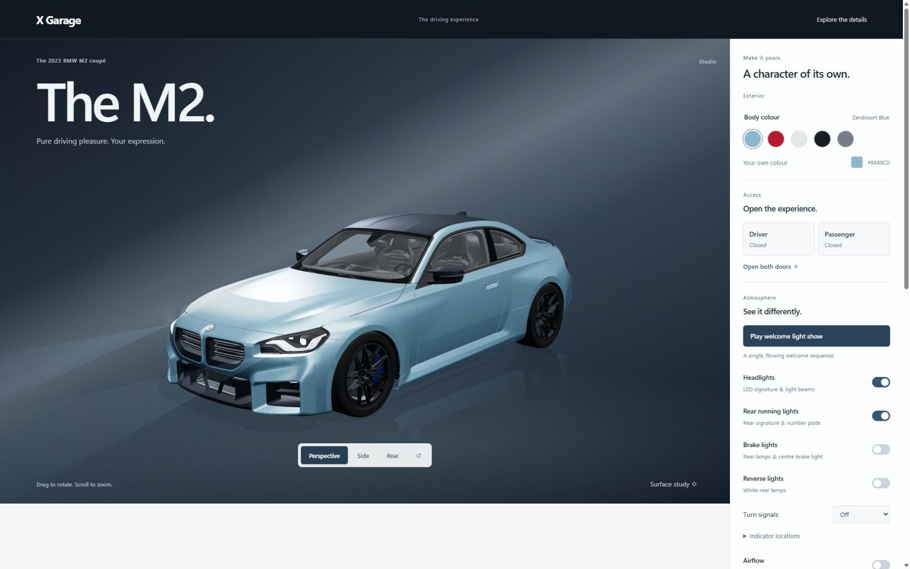
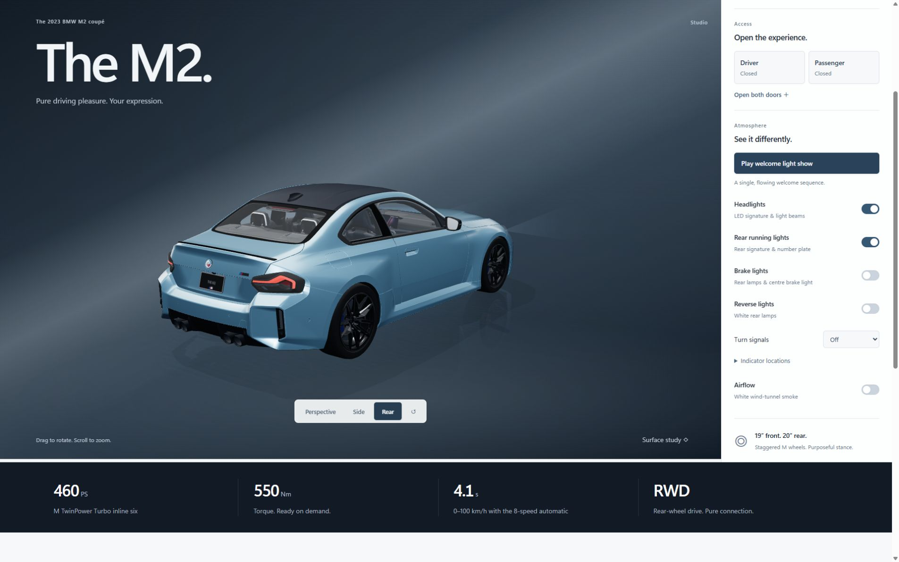

Switch the point of view.
Perspective, side, and rear presets provide repeatable ways to inspect the model.
PERSONAL 3D VEHICLE EXPERIENCE
INDEPENDENT PROJECT / LIVE WEBGL SCENE
A personal browser-based experience for exploring a vehicle through real-time camera, material, access, and lighting controls.
VIEW LIVE EXPERIENCE ↗
Captured directly from the running X Garage WebGL experience. The portfolio presentation shows the rendered scene without reproducing the live project’s promotional interface copy.
Vehicle attribution Vehicle model depicted: BMW M2 (G87). BMW and M2 are trademarks of BMW AG. X Garage is an independent personal study and is not affiliated with or endorsed by BMW.

X Garage places camera, finish, access, and lighting controls beside the same live browser scene, so each change stays visible and easy to understand.
The current experience uses a BMW M2 (G87) model as its vehicle subject. It is presented as an independent interaction and rendering study, not an official product experience.
The interface keeps a small number of controls close to the vehicle and gives the rendered scene visual priority.
Perspective, side, and rear presets provide repeatable ways to inspect the model.
Drag-to-rotate and scroll-to-zoom support closer inspection from custom angles.
Preset and custom colours update the material in the active scene.
Driver and passenger access controls expose the model’s animated parts.
Headlights, rear lamps, indicators, and a welcome sequence can be viewed in context.
A surface-study option keeps attention on form, proportion, and material response.
A small set of controls maps directly to visible scene changes without overwhelming the vehicle.
The vehicle occupies the main visual field while controls stay in a separate inspection panel.
Camera, colour, access, and lighting changes appear immediately in the same scene.
Controls describe the state they change instead of introducing a second visual language.
Camera presets, orbit controls, and surface study support different levels of detail.
Four practical layers organise the current browser experience and its scene controls.
One vehicle.
Multiple states.
A focused study.
X Garage brings a rendered vehicle, its camera views, and its configurable states into one browser experience. The result is a practical personal study of real-time presentation and interaction.